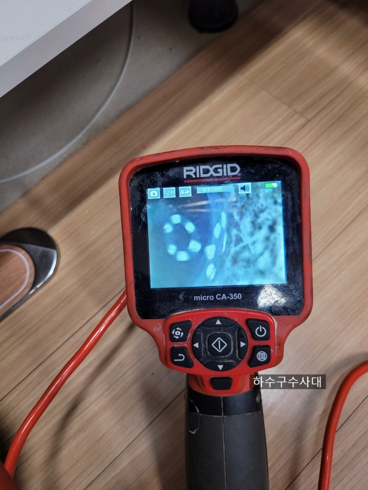
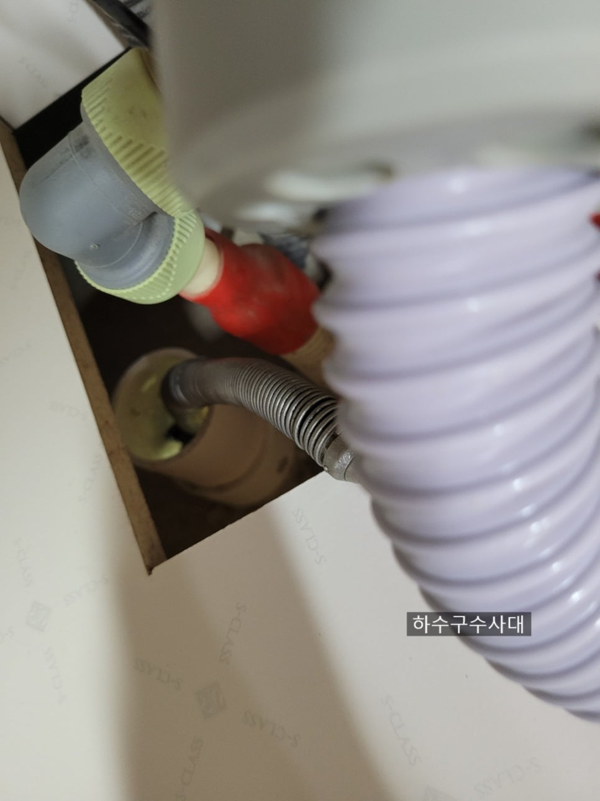
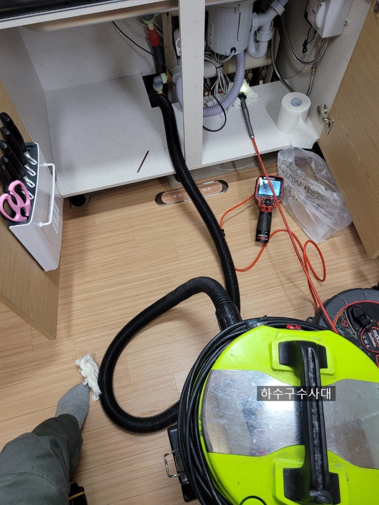
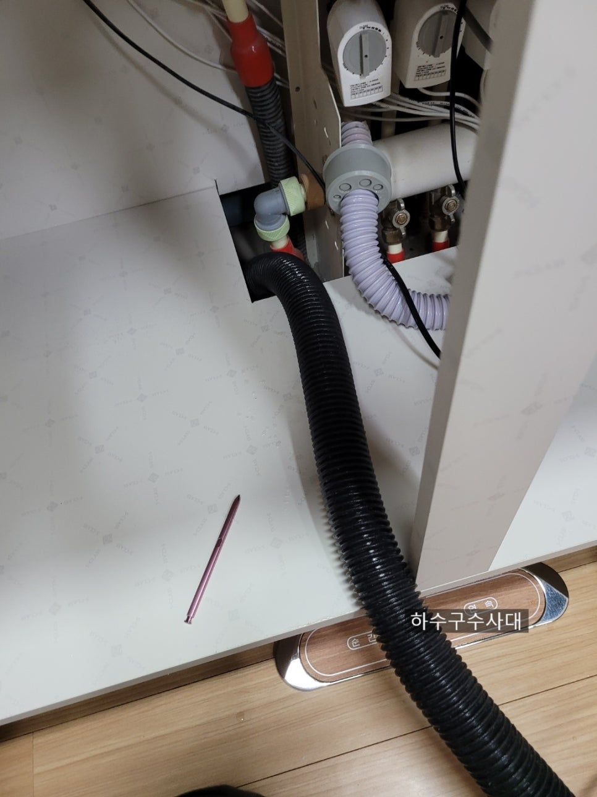
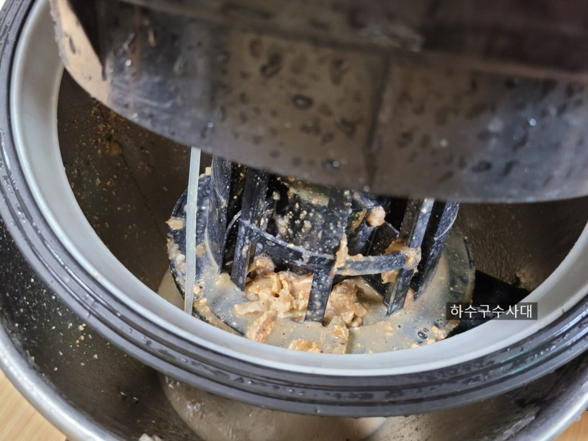
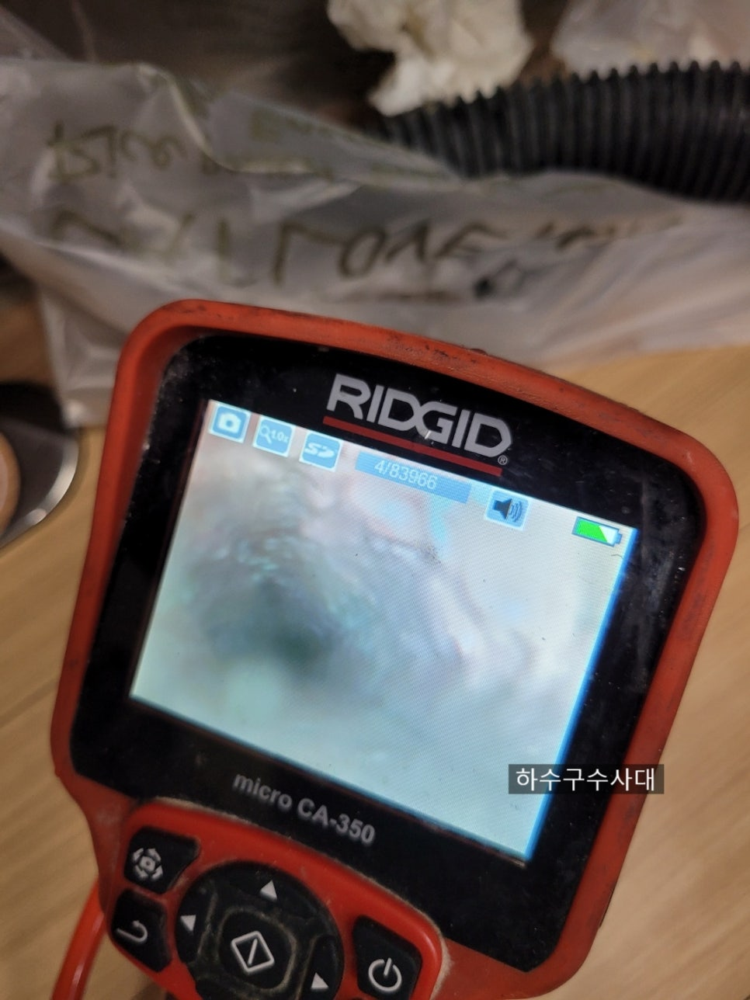
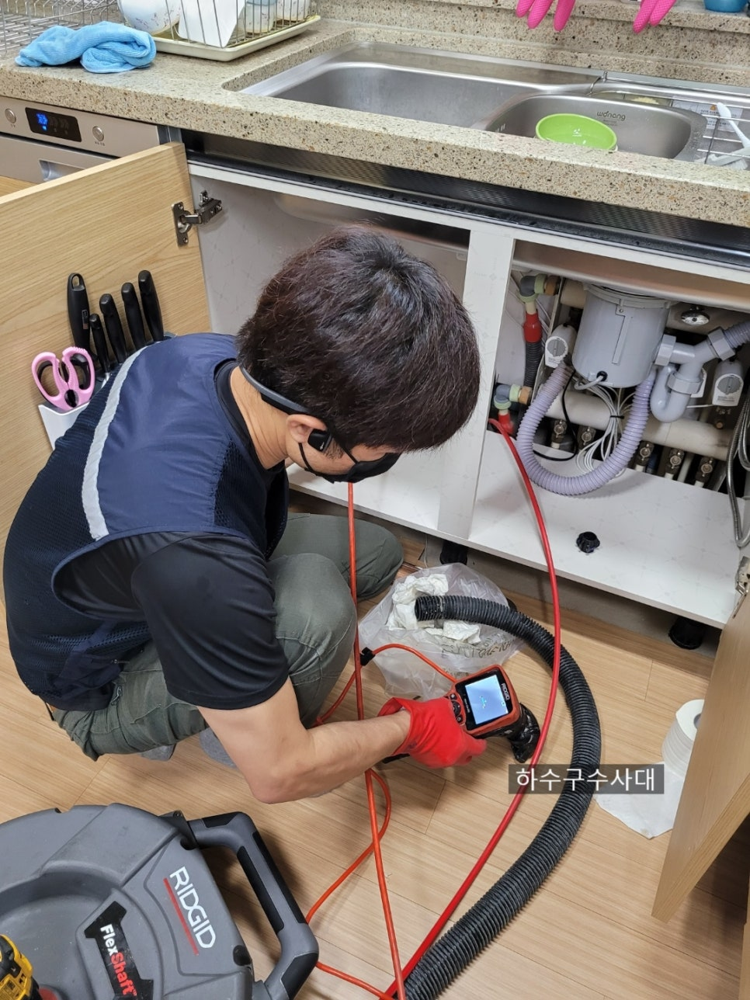

🏠 싱크대배관막힘 해결
용인 싱크대막힘 전문 시공 후기

📋 작업 개요
- 위치: 용인
- 서비스 유형: 싱크대막힘, 하수구막힘, 배관막힘, 누수수리, 역류해결, 고압세척
- 작업 일시: 2021. 6. 19. 0:11
- 업체명: 하수구수사대 (010-5615-2118)
🔍 문제 상황
싱크대배관막힘 해결
안녕하세요
하수구수사대입니다.
오늘은 오전에 비가 와서그런지
날이 시원하고 좋습니다.
오늘도 하수구수사대는
고객님들의 불편을 해결해 드리려고
바쁘게 다녔습니다.
오늘은 아파트싱크대막힘 문제로
한 현장에 대한 포스팅을 해보겠습니다.
배관내시경검수
싱크대배관막힘 해결을 위해
고객님께서 전화를 주셨는데요
내시경으로 배관을 보니
바로 배관위쪽까지 물이
차있습니다.
안쪽에서 꽉막혀 있는상태로
물을 조금만 틀어도 바닥으로
새어나온현장입니다.
다행히 많은물이 넘치기 전에
발견하셔서 밑에집에 누수피해는
없다고 하시네요.
보통 싱크대밑에 걸레받이 때문에
넘치는걸 모르고 장기간 사용하다가
밑에집 천장에서 물이 샌다고
관리실에서 연락이오는 경우가 많습니다.

🔎 원인 분석
💡 전문가 진단: 하수구수사대010-2340-2118
다행히 오늘 현장은
조기발견하셔서 큰 불상사는
피했습니다.
석션작업
우선 배관에 물을 빼줍니다.
배관상태를 정확히 진단하기 위해서죠.
단순하게 막힌건지
많은 기름덩어리로 차 있는지
물을 빼면 자세히 볼수 있습니다
죽슬러지
고객님께서 펑크린이라는 액체를
많이 부었다고 하시네요.
하지만 오늘현장 싱크대배관에는
기름이 엄청 많은 상태였습니다.
펑크린으로 인해 오히려 기름이
죽이 되버린 상태가 되었습니다.
오히려 더 막힘을 악화시키셨네요.ㅜㅜ
석션으로 흡입해보니 기름슬러지와
펑크린이 섞여 죽상태가 되었습니다.
조금씩나가던 물이 기름이 죽이 되버리면서
더꽉막아 버렸어요.
배관내시경
내시경으로 검수해보니
배관형태가 보이지 않고 전체적으로
기름슬러지가 많이 붙어있습니다.
그리고 구조상 3번이나 꺽여서
많은양의 물을 흘려보내지 않으면

🔧 작업 과정
기름성분이 못나가는 구조로 되어있었습니다.
신축으로 지은지 3년밖에 안되는
명품고가 아파트인데 배관구조는 명품이
아니네요 ㅜㅜ
배관세척작업
싱크대배관막힘 해결을
위해 배관세척작업을
시작합니다.
기름이 많이 내시경으로 보면서
기름들을 제거해 나갑니다.
세척작업
보통 아파트는 수직배관인 공동배관까지
세척을 하면됩니다.
공동배관인 수직배관에서는 물이
떨어지기 때문에 막힐일이 없습니다.
간혹 비닐이나 작은 이물질이 들어가기도
하는데 대부분 지하층까지 떨어집니다.
하지만 지하층에서 막힐수가 있기때문에
조심하셔야 합니다.
잘못하면 저층세대에서 피해를 볼수 있기
때문입니다.
세척완료
싱크대배관막힘 해결이 되었습니다.
배관색상이 하얗게 잘보입니다.
다행히 초반에 기울기는 좋은데
2번째 꺽이는 쪽에 기울기는 조금
좋지않아 물이 조금 차있었습니다.
고객님께 구조를 설명드리고
관리방법에 대해서도 자세히
전달해 드렸네요^^
3년만에 막혔기때문에 정말
관리가 절실한 아파트였습니다.
확인을 위해 물을 받아서
테스트를 하였습니다.
배관이 텅텅 비어있는 상태에서는
꼬르륵하는 울림소리가 들리면
배관상태가 좋다고 보시면
됩니다.
혹시 물을 받아서 내릴때 소리가
들리지 않으면 한번쯤 의심해
보실만 합니다.
역류하는지요.


✅ 작업 완료
요즘들어 브랜드아파트가 오히려
싱크대구조를 거실쪽으로 옮겨 놓다보니
배관이 길어지고 길어지다보니
기울기라 좋지 않은 경우가
종종 있는데 그리 좋지 않다고
말씀드리고 싶습니다.
하수구수사대
010-2340-2118
벌써 주말이네요
모든분들 보람찬 주말 잘보내시고
이번 한주도 수고하셨습니다^^




⚠️ 베란다 누수 및 방수 관리 방법
- ✅ 비가 많이 올 때 창틀 주변이나 아래층 천장에 얼룩이 생기는지 정기적으로 확인해 보세요.
- ✅ 우수관 주변 실리콘 마감이 들뜨거나 깨진 틈새가 있는지 손상 여부를 수시로 체크하세요.
- ✅ 베란다 바닥 타일의 줄눈(메지)이 소실되면 그 틈으로 물이 침투하여 누수가 유발됩니다.
- ✅ 누수 의심 증상 발견 시 방치하면 아래층 손실이 커지므로 즉시 전문가의 진단을 받으십시오.
💡 핵심 정리
- 확실한 장비 작업(내시경 점검 및 샤프트 스케일링)으로 원인을 뿌리 뽑습니다.
- 작업 후 1년 이내에 동일한 부위 재발 시 100% 무상 A/S 서비스를 보장합니다.
- 서울 · 경기 · 인천 전 지역에 24시간 언제든 긴급 출동할 수 있도록 항시 대기 중입니다.
❓ 자주 묻는 질문 (FAQ)
🚨 용인 싱크대막힘 문제로 고민이신가요?
정확한 원인 진단과 확실한 시공으로 재발 없는 해결을 약속드립니다.
24시간 긴급 출동 | 서울 · 경기 · 인천 전지역 | 1년 내 재발 시 무상 A/S